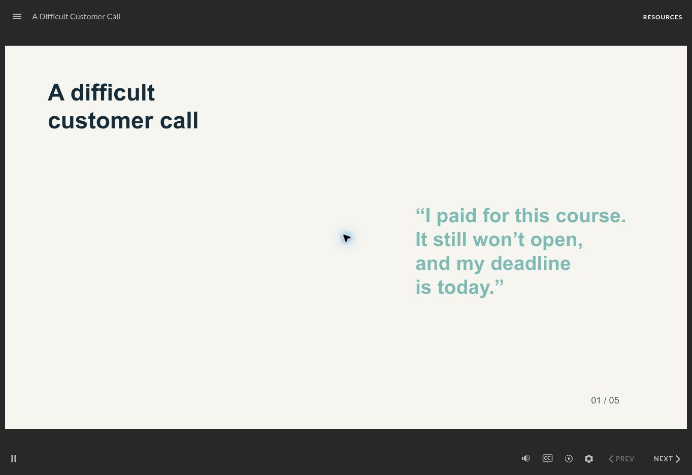

Open interactive demo ↗01 / POWERPOINT → STORYLINE
A Difficult
Customer Call
A five-slide PowerPoint-to-Storyline conversion. I turned supplied presentation content into a short customer-service learning experience, adding narration, timed animation and opportunities to practise a response.
- Click-to-reveal content and question feedback
- Audio, navigation and a clear completion step
- SCORM package tested for completion in an LMS